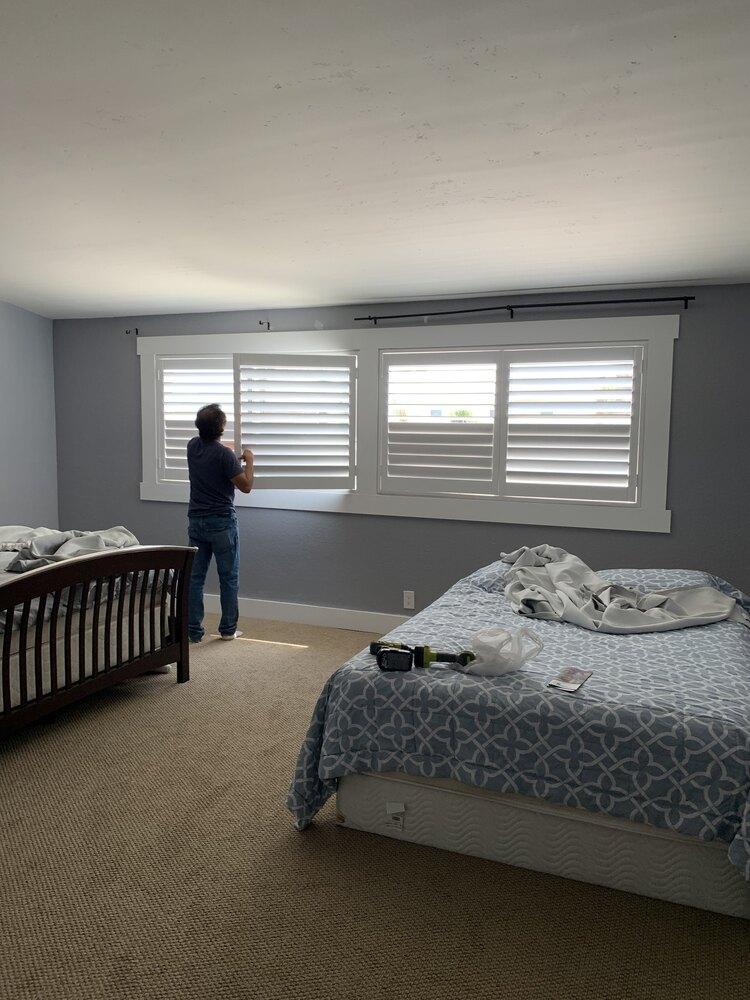
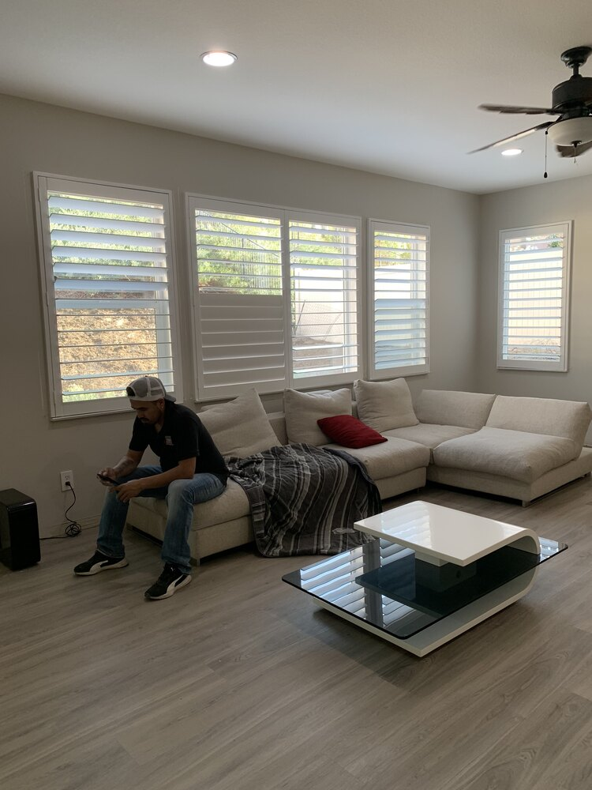
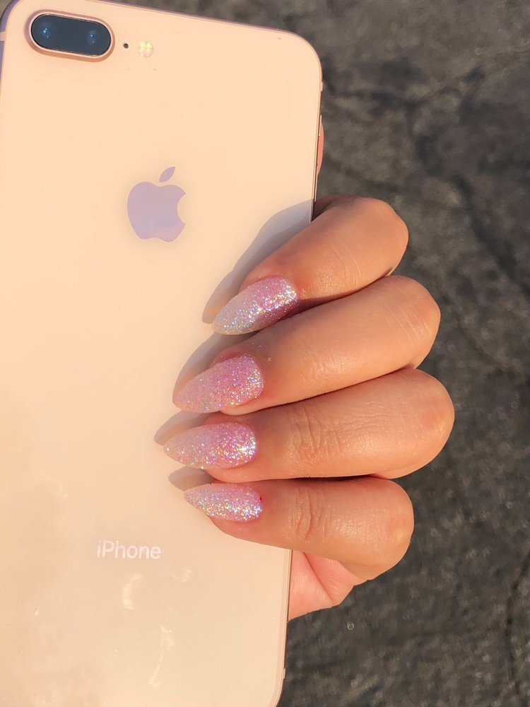
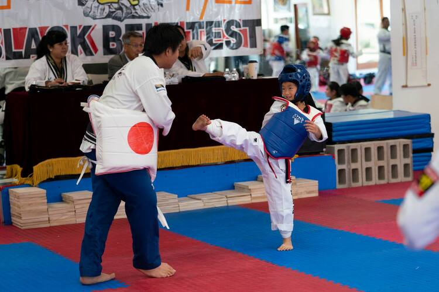
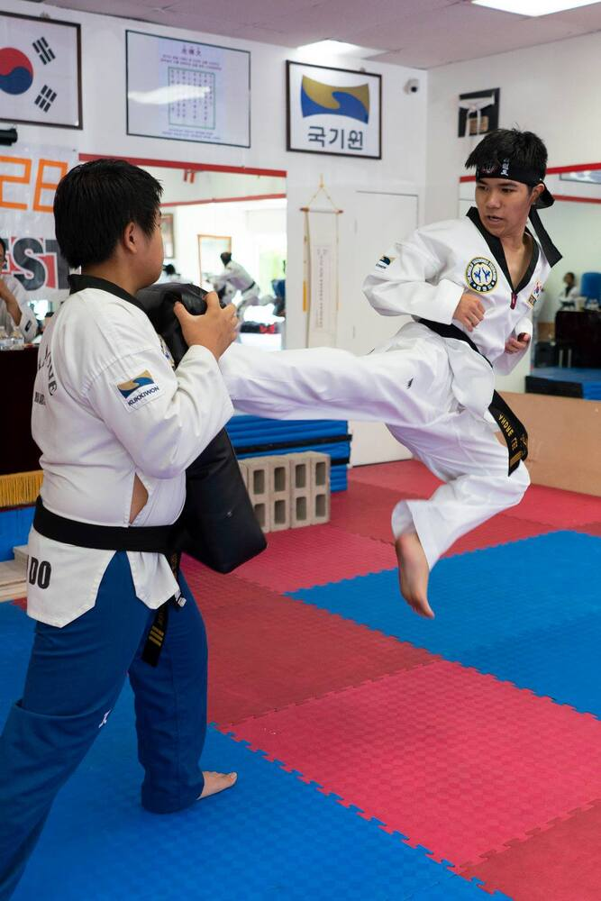
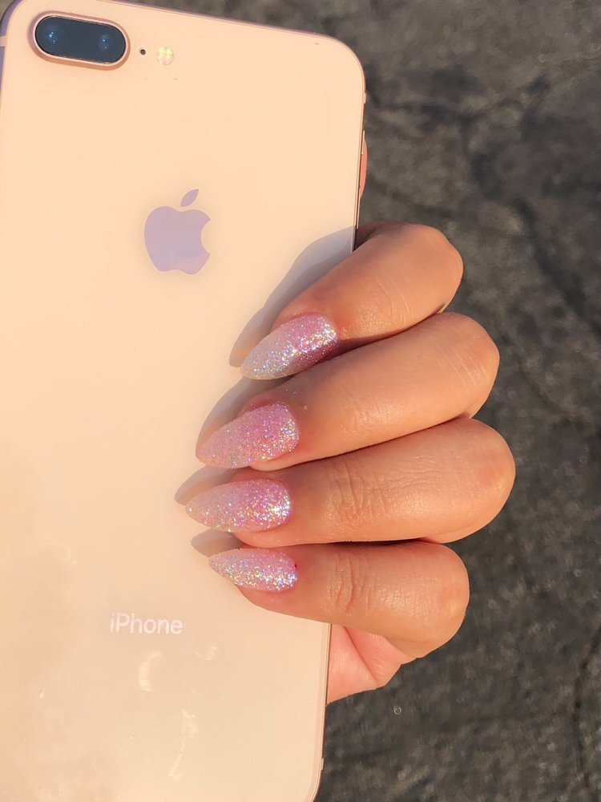
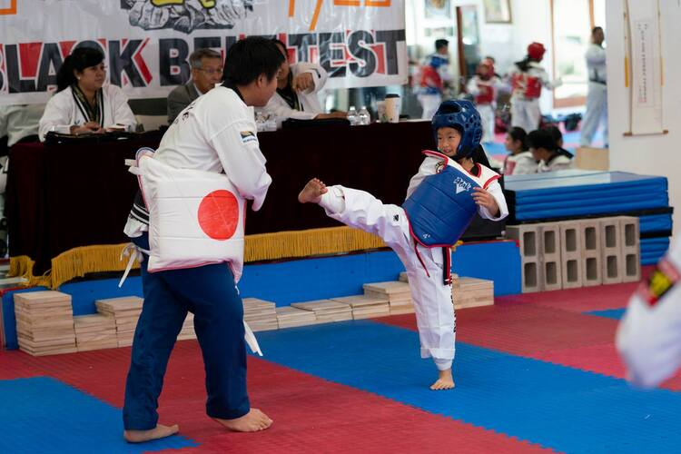
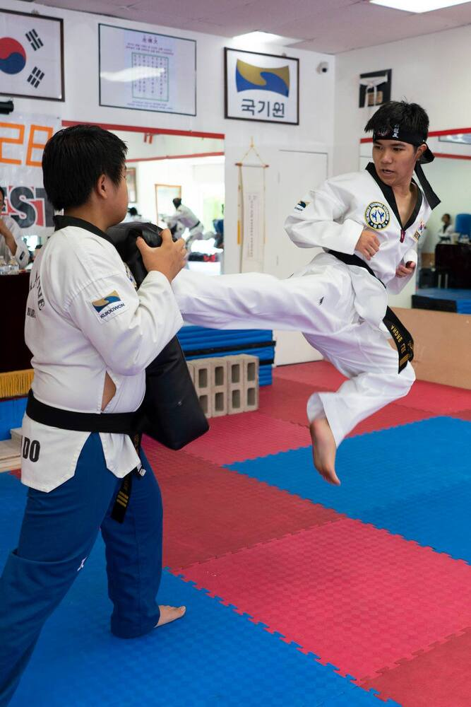

Kenny Nguyen
Growing up, I have had many experiences of work. One experience was Tae Kwon Do. I have done TKD for a total of 8 years. Throught these 8 years, I got myself a black belt and learned alot about the virtues of TKD. TKD teaches you alot about, respect, spirit, self control, and leadership. As I slowly climbed the ranks my master saw that I was exceptional at the martial art. He could see the qualities needed to become an instructor. Leadership, able to communicate, friendly, and understanding. I was offered a chance to teach classes and the younger ranks. Teaching TKD taught me alot about how to guide people of all ages to success. It was where my leadership experience was first learned and honed.
My parents both have their little buisness, and being their kid, I am always around to help out. My mother owns a nail salon in Fontana. The name of the shop is Nailbar and Spa. The days there can get very busy, and it can get hard to run it by herself. She will ask me to come to work to help her with tasks. I have grown fond to the frequent customers there as well as the coworkers. At the Nail Salon, I will run the cash register, pick up phone calls, schedule/manage appointment, provide customer service, as well as assist in cleaning. Whenever I am there, I make sure my mom does not have to be stressed out with those tasks. This experience taught me how to multitask, and handle customers well. I was able to make sure customers walked out of the salon satisfied and relaxed.
My Father is a contract worker. He gets contracts from salesmen, and companies to install shutters. This job is very labor intensive, but it is very rewarding. I will go along with him to work whenever I can. The job is not just labor, but I will use it as a way to establish connections. I have been able to expand the ammount of work my father has, by talking to clients, and convining them to get shutters, or refer friends and family to my dad and I. I am currently going to school in order to help my father with his company, becasue it has been very successful with me around to translate and get more clients. I am studying to learn different stragegies to grow my fathers shutter buisness.
Experience
Instructor
• Taught all ages Tae Kwon Do
• Assisted in events, belt tests, as well as championships
• Refereed in a Championship
• Coached students in Championships
• Made connections with students and their families
Cashier, Receptionist, Customer Service
• Responsible for checking out customers
• Picking up phone calls
• Answering questions
• Scheduling/Managing appointments
• Making sure customers are relaxed and feel welcomed
Contractor
• Helps install shutters
• Touch up blemishes
• Make sure customer is satisfied
• Explains what shutters are, how they work, and what they do.
• Make connections to get more jobs
• Salesman
Education
Claremont High School
University of California Riverside
Portfolio







 